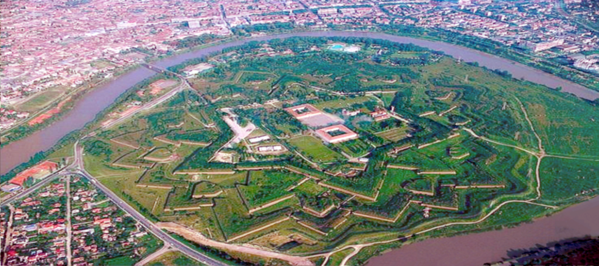

Arad is the capital city of Arad County, historically situated in the region of Crișana, and having extended into the neighboring Banat region in the 20th century. Arad is the third largest city in Western Romania, behind Timișoara and Oradea, and the 12th largest in Romania, with a population of 159,704.A busy transportation hub on the Mureș River and an important cultural and industrial center, Arad has hosted one of the first music conservatories in Europe, one of the earliest normal schools in Europe, and the first car factory in Hungary and present-day Romania. Today, it is the seat of a Romanian Orthodox archbishop and features a Romanian Orthodox theological seminary and two universities.

Main attraction: Fortress of Arad
The monuments found in the city mark the stages of its history, beginning with the Fortress of Arad, which was built at the time of the Empress Maria Theresa and her son Joseph II in the second half of the eighteenth century. The fortress, which is considered a masterpiece of military engineering, is situated on a bend in the River Mures, which surrounds it on three sides. It has the shape of a double six-sided star and inside houses military buildings and barracks.
2. Cheile Nerei–Beușnița National Park
At the two extremes of the gorge you will find two karstic lakes, Ochiul Beiului which is renowned for its spectacular color and Lacul Dracului (Devil’s Lake), a unique karst phenomenon in our country.Three waterfalls that you should not miss: Beuşniţa, Văioaga and Bigăr.
Main attraction: Bigar Waterfall
What makes this waterfall rare and spectacular is the way the water spring spreads over the moss of the cliff, plunging in many tiny shreds in the Minis River. Surfing to surface some 200 meters before the waterfall, the spring flows rapidly and noisy to its final destination.
Like many other natural attractions in Romania, Bigar Waterfall has its own legend, this time of a girl in love, locked by her parents in the small cave close to the falls. Desperately wanting to be with a boy named Bigar, the girl could only do that after she was transformed into a waterfall and the boy drowned in its waters.
3. Oradea
Oradea is a city in Romania, located in Crișana region. Seat of the Bihor county, Oradea is one of the most important economic, social and cultural centers in the western part of Romania. The city is located in the north-west of the country, nestled between hills on the Crișana plain, on the banks of the Crișul Repede River, that divides the city into almost equal halves.Oradea enjoys a high standard of living relative to other Romanian cities and ranks among the most livable cities in the country. The city is also a strong industrial center in the region, hosting some of Romania's largest companies. Besides its status as an economic hub, Oradea boasts a rich Art Nouveau architectural heritage and is a member of the Réseau Art Nouveau Network.
Main attraction: The City Hall Palace
The town hall tower with a height of about 50 m, located in Unirii Square, is one of the main attraction points, with observation decks at 3 out of its 4 levels.The climb up to the top is not that bad and you won’t even know when you get up because you will be too busy reading about the city’s history and main important buildings.